Suscripción Smart
Es importante saber que en los dominios donde tenemos Iata propio, tenemos activado el servicio Smart
En todo el proceso de compra, el cliente puede elegir el tipo de tarifa que desea.
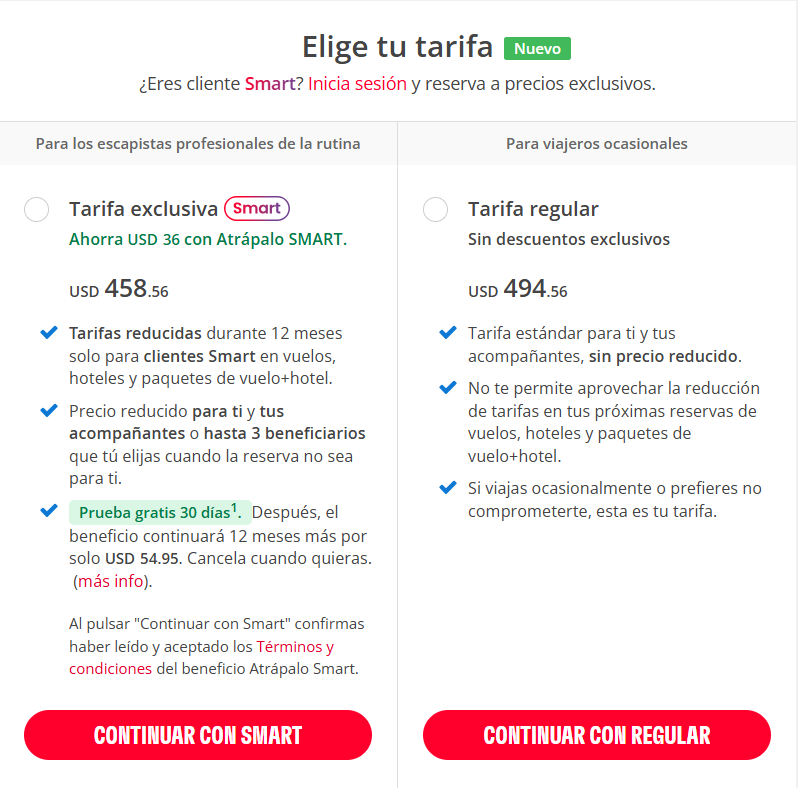
Si continúa con la opción Smart, además de poder ver el detalle del beneficio también le figura el
ahorro que se genera.
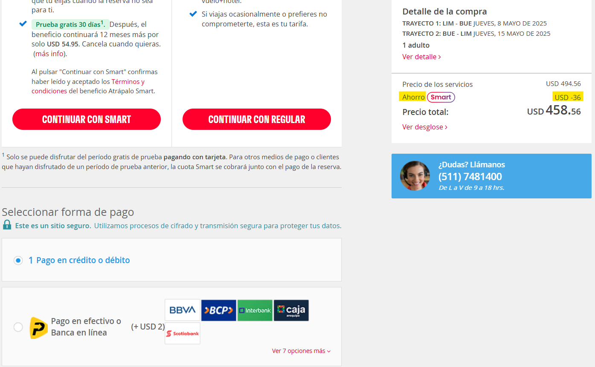
Cuando optan por la tarifa Smart, el único medio de pago va a ser Tarjeta.
Si bien le brinda la opción de PagoEfectivo, al momento de intentar seleccionarla aparece este cartel:
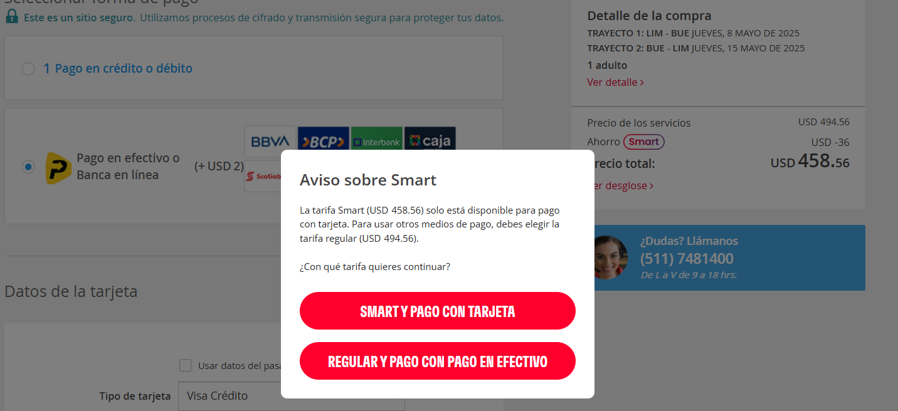
Si el pax decide continuar con la tarifa regular, va a poder pagar con tarjeta y con la opcion de PagoEfectivo
Acá figura que no tenemos ningun ahorro.
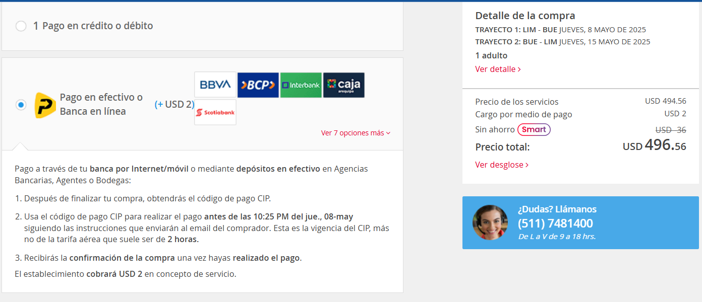
Anulación Suscripción
Como ya lo vimos en el detalle de compra, el pax tendrá la posibilidad de cancelar la Suscripción sin costo estando dentro del plazo de los 30 días desde la creación de dicha Suscripción.
Si es este el caso, lo importante es entender el proceso de anulación correcto para evitar cobros y reclamos de pax innecesarios.
En primer lugar hay que entender que el cobro que figura en la caja como Atrápalo Smart es simplemente un costo ficticio.
El admin carga los Gastos de gestión del pedido de esa manera para poder cuadrar el pago que no se va a trasladar al pax por haber contratado el servicio Smart.
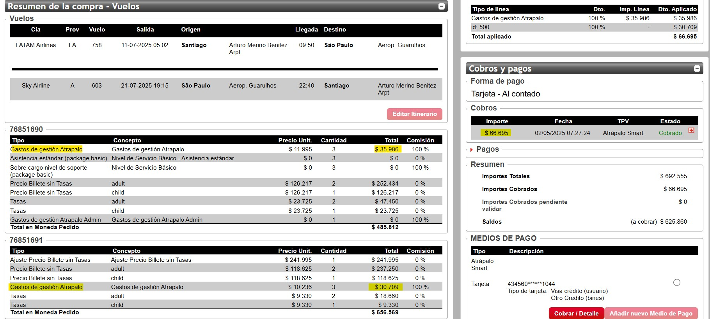
Ahora bien, la posibilidad de anular sólo será posible si se tratase se la Primer compra del pax.
El periodo de prueba gratis es solo por única vez
Toda la información necesaria para continuar con la gestión la obtendremos desde el admin.
Para analizar ese detalle debemos desplegar la caja de Información del usuario
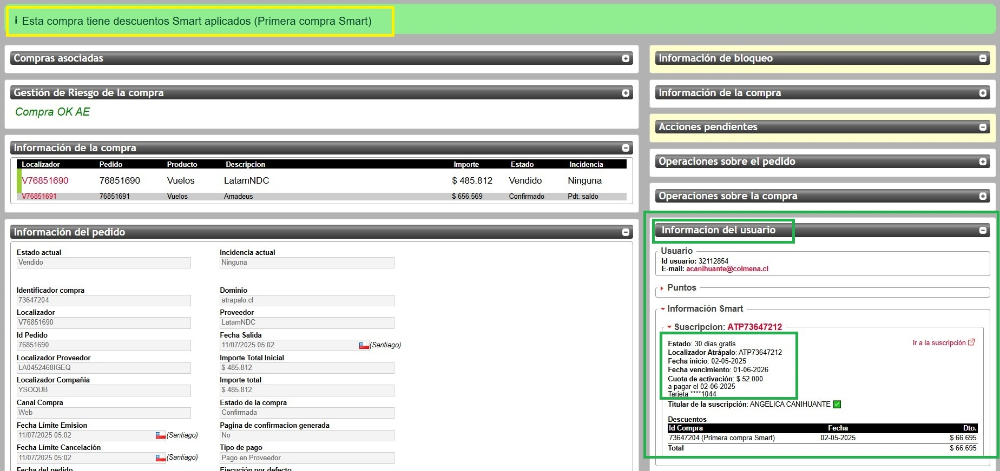
Debemos ingresar en el admin del Smart para continuar con la anulación, por ende daremos click en la opción Ir a la Suscripción
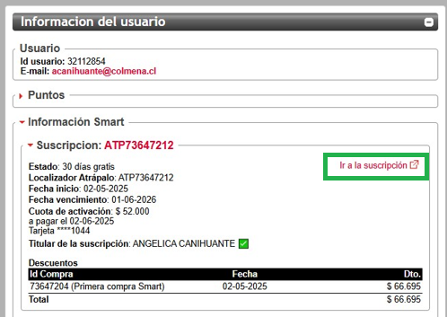
Esto nos llevará al admin del Smart y veremos asociada la misma tarjeta que cargo el pax para abonar el pedido de vuelo con el importe de la Suscripción Smart a cobrarse.
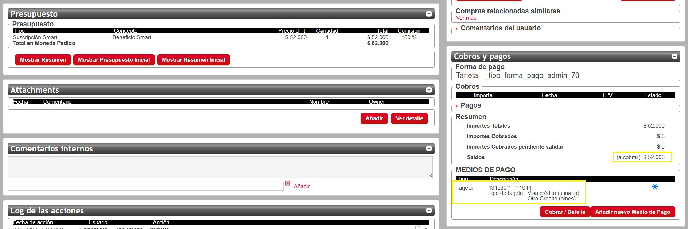
El hecho de cancelar la Suscripción desde el admin del Smart es lo único que garantiza que no se cobré ese costo al pax en un futuro por el servicio
Cancelaremos el servicio con la opción Cancelar Suscripción
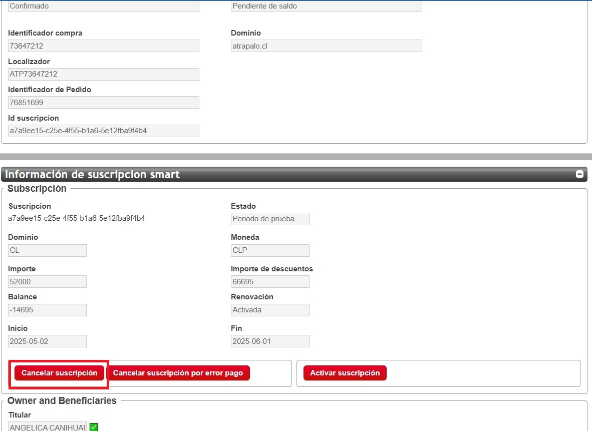
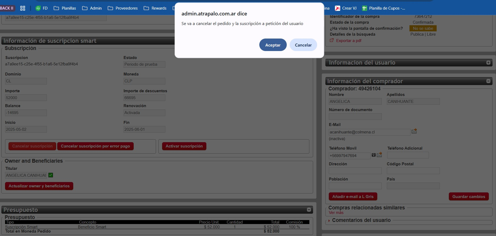
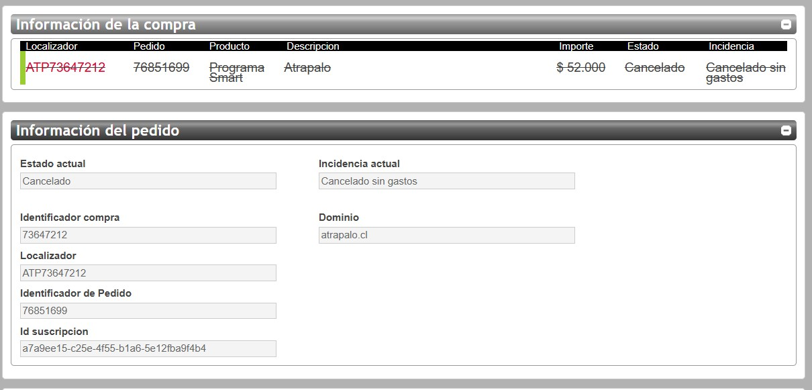
Para finalizar con el proceso correcto, debemos dejar comentarios en el pedido de los vuelos sobre la acción tomada y además, vamos a cuadrar la caja.
Recordemos que el importe que figura es ficticio, así que simplemente vamos a devolverlo por la misma caja.
Desplegamos el + y damos click en el botón Devolver cobro.
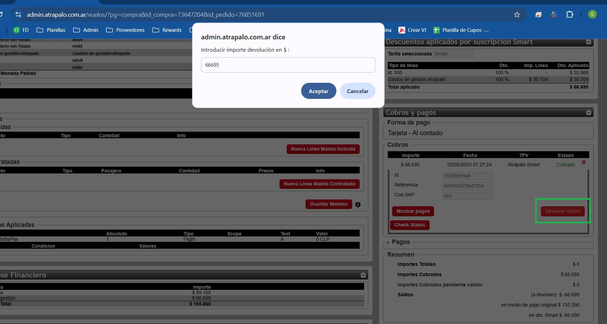
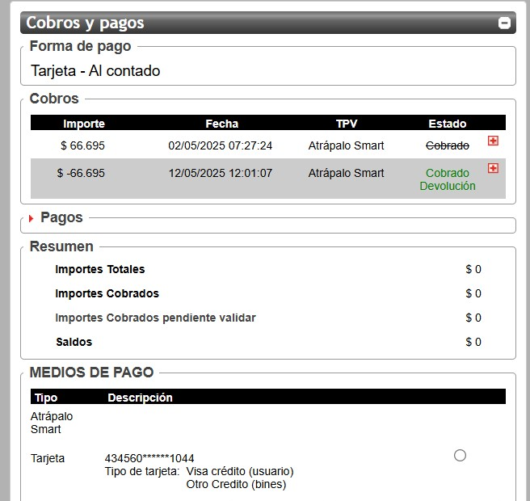